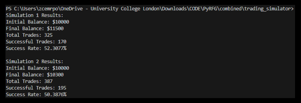
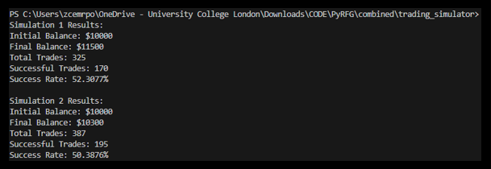

Based London, UK | UCL BEng Mechanical Engineering, 1:1, 2025 | Worked in software engineering, quantitative research & finance
Email: chandernoah@gmail.com · LinkedIn · GitHub
LANGUAGES: Python, C++, Java (OOP) / Scala (functional), Typescript/JavaScript, MATLAB (VS Code, Spyder, IntelliJ editors)
TECH: Python Pandas, NiceGUI, PyTorch, Scikit-Learn, Andrew Ng’s Machine Learning Specialisation, React/Next.js, SQL, Excel
SYSTEMS: Experience with Unix/Linux dev., distributed system design, and asynchronous API communication for network latency.
Comparing the Efficacy of 2 Machine Learning Stock Predictors
Built and compared a Random Forest Generator and a PyTorch LSTM for directional stock prediction. The LSTM beat the RFG across error metrics and in a C++ trading simulator test.
 

Website for a UCL Professor — Accessibility Project
Internship work: Next.js frontend, authentication, contact page, image-to-braille tooling using DALL·E and pixelation scripts.


Image pixelation script (excerpt)
from openai import OpenAI import requests from PIL import Image from io import BytesIO import cv2 import numpy as np # (script in README — full code in README.md)
Development of Online, On-demand Digital Tools
Built front-end tools with NiceGUI and Python; examples include a directory-to-HTML converter and other small utilities. Some work is proprietary and hosted on partner sites.

Amazon SDE Internship
Internship experience as a Software Development Engineer — worked on distributed systems and backend services (summary below).

Highlights: backend service design, performance tuning, and collaborating with cross-functional teams.